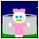
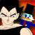

My Animation
I animate professionally for children's television, but I also have some "original" content as well. These are some of my more popular works made for Newgrounds and Vimeo.
DISCLAIMER: The content in these cartoons may contain negative stereotypes and mistreatment of ducks. This was intentionally meant as harmless fun back in 2005, but aged badly after I started having kids. Rather than remove this content (which is pointless, because it's already been copied and viewed a million times), I want to acknowledge its harmful impact, promise to do better, and leave these up for any adult who enjoys late night jackass comedy and is already desensitized to "boomer humour".
Vancouver Film School
|
Wasabi Guy
Released: February 4, 2013
For my final assignment at Vancouver Film School, we had to make a two-minute short. I based this cartoon on that time I ate a whole thing of wasabi in a restauraunt (not recommended). The finished film was developed in Maya and took roughly four months to finish.
Daddy Rating: Mostly okay! Might encourage kids to use chopsticks and eat horse radish.
|
The Ducktalez Saga
This series is my pride and shame, and probably the reason you even found this site. This parody of Disney's "Ducktales" is what launched my internet presence back in the 2000's when I released the first three episodes on Newgrounds. Over time, I released a full seven episodes, each one a platform for learning new animation skills. Since then, it's won many runner-up awards, earned its own TV Tropes page, and I'm pretty sure Disney even animated an unofficial cease-and-desist for it. I'd be so proud if this weren't something I can't put on a resume.
|
Ducktalez: The Motion Picture
Released: September 7, 2001
The legend begins in this crazy two minute short that only got made because I was testing out my new microphone. Scrooge and the boys must protect the money bin from their arch-enemy Glomgold.
Daddy Rating: Not okay! Contains circular blood, farts, and child abuse.
|
|  |
Ducktalez 2: Residuck Evil
Released: October 19, 2004
Scrooge and the boys experience a night of terror when their mansion is overrun by zombies and other nasty creatures.
Daddy Rating: REALLY NOT OKAY! Contains blood, jump scares and Michael Jackson jokes.
|
|  |
DucktaleZ 3
Released: May 16, 2005
Experience the most viral thing on my site in glorious, 4.5 meg low-quality Flash! In this episode, a Saiyan Prince from outer space named Vegeta challenges Scrooge for his lucky dime. What ensues is an epic battle of epic proportions across the whole epic planet. After many years, this episode finally reached 1000000 views in 2018, putting it just a few million views behind "Despacito".
Daddy Rating: Just under okay! Contains fighting, explosions, and child abuse.
|
|
Ducktalez 4: Louie and the Wishing Star
Released: May 10, 2009
After a hiatus, I brought the series back for a four-chapter story arc. This first chapter in the "Nephew Trilogy" follows Louie as he makes a new best friend and they have a wonderful time together.
Daddy Rating: Pretty good! No child abuse in this one!
|
 |
Ducktalez 5: Quack to the Future
Released: February 10, 2010
The second chapter of the trilogy follows Dewey after he gets struck by lightning and acquires time-travel powers. Features many instances of my mouth making swooping sound effects because I just didn't feel like doing real foley work.
Daddy Rating: Might be okay! Just a little child abuse this time.
|
|
Ducktalez 6: The Duck Knight
Released: April 3, 2011
The Nephew Trilogy reaches its conclusion when Darkwing Duck shows up to recruit Louie and Dewey as his new sidekicks -- and it's up to Huey to save them! Much like DZ3, this is another 20 minute ep, so grab some lunch.
Daddy Rating: Less than okay. A fair bit of child abuse and a sausage joke. There's a Spice Girl gag that offended someone, and I still don't know why.
|
|
Ducktalez 7
Released: December 15, 2013
Making this cartoon might have broken me. At almost 40 minutes, this is currently the definitive conclusion to the Ducktalez series. It follows Scrooge and Vegeta on the same fateful night that the nephews have their adventures as they wander the weary streets of Duckburg getting into hijinks with Gizmoduck and the Beagle Boys. This cartoon features several guest voices, and plenty of terrible sound mixing because I started losing my voice partway through and had to digitally alter Vegeta's pitch just to cover up the sound of my tears. But it was worth it to get to the Ogopogo scene.
Daddy Rating: Probably not okay. Lots of drinking, drug use, depression, fighting, and self-deprecating brony humour. With just a little child abuse on top.
|
|